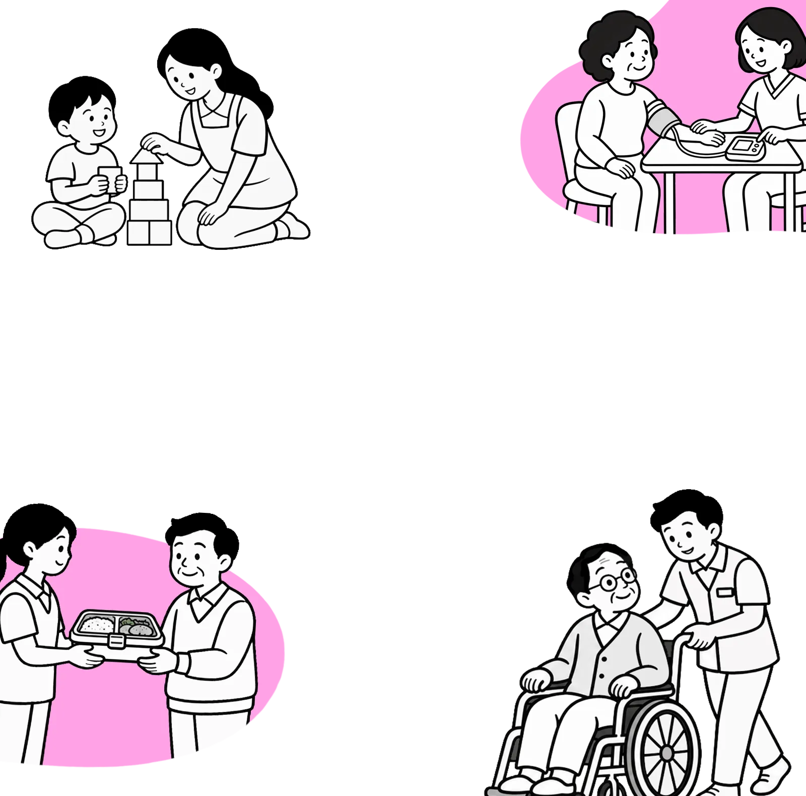

어디 살든 돌봄은 든든하게,
‘남빛돌봄’이 시작됩니다
광주에서 시작해 전국으로 확대되었던 광주다움 통합돌봄이, 통합을 발판으로 더 크고 더 촘촘하게 진화합니다.
남빛돌봄, 쉽게 말하면?
어디에 살든 돌봄이 필요한 사람이 빠짐없이 도움을 받도록 만드는 전남광주특별시만의 돌봄 방식이에요. 도시, 농어촌, 섬 등 지역별 특성을 반영한 전남광주통합특별시만의 돌봄모델이라고 할 수 있죠.
두 가지 돌봄
필요한 돌봄은 공공이 든든하게,
필요한 돌봄은 공공이 든든하게,
일상의 돌봄은 이웃이 다정하게
- 민간 돌봄서비스가 부족한 지역 기본돌봄센터 등의 공공 돌봄거점
- 사회연대경제 등 지역사회 자원 활용 시민이 직접 참여하는 돌봄 체계
| 구분 | 남빛기본돌봄 | 남빛공동체돌봄 |
|---|---|---|
| 누가 | 공공 | 이웃과 공동체 |
| 어떻게 | 돌봄이 필요한 시민을 공공이 먼저 찾아가 필요한 서비스로 연결 | 공적 서비스만으로 채우기 어려운 일상 속 빈틈을 이웃과 함께 |
| 누구에게 | 소득, 연령, 재산, 장애 여부와 관계없이 돌봄이 필요한 시민 누구나 | 일상 속 돌봄 공백이 있는 이웃 |
현장 목소리
현장 목소리를 정책으로
현장 목소리를 정책으로
27개 시군구 맞춤돌봄
-
첫 회의
최근 전남광주통합특별시가 ‘남빛돌봄 솔루션팀’ 첫 회의를 열었어요. 사는 지역에 관계없이 필요한 돌봄을 받도록 27개 시군구의 특성을 반영한 ‘남빛돌봄’ 모델 설계에 착수한 것인데요.
-
특징
정책을 수립해 시군구에 전달하는 기존 방식을 벗어나, 현장 실무자가 정책 설계에 직접 참여하는 것이 특징이랍니다.
-
앞으로
앞으로 수시로 실무회의를 열어 현장 의견을 정책에 반영하고 지역 유형별 돌봄모델 개발과 27개 시군구 확산을 위한 사업 설계·평가에도 박차를 가할 계획이에요.